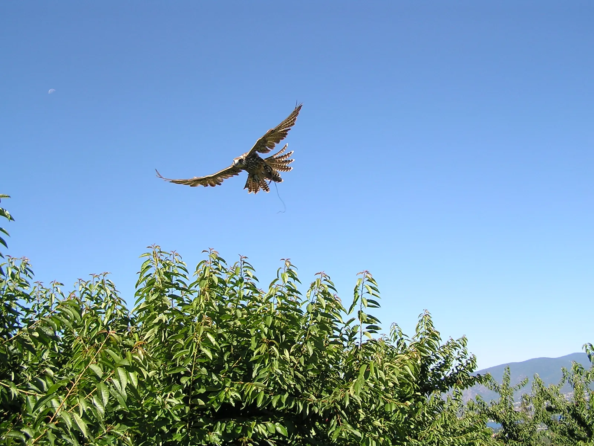
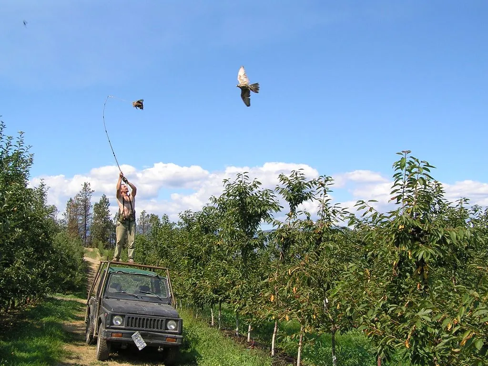
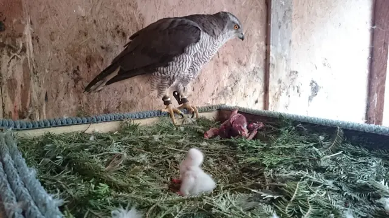
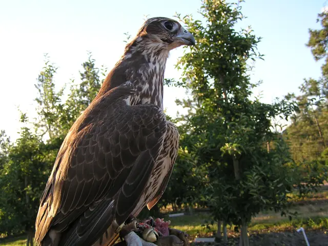
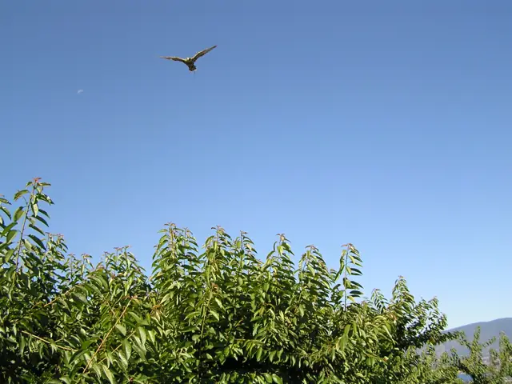
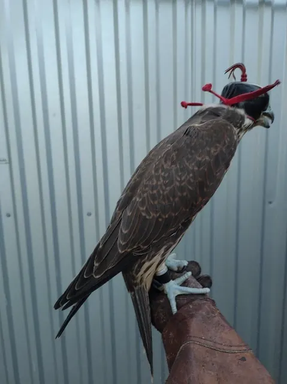
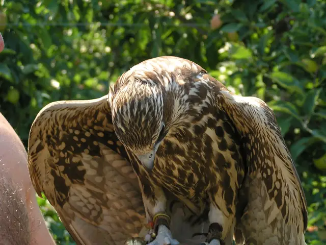
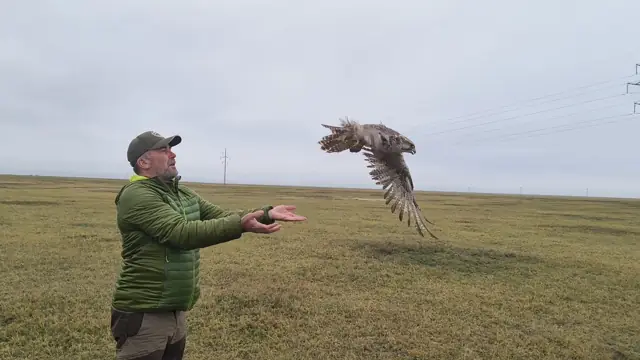
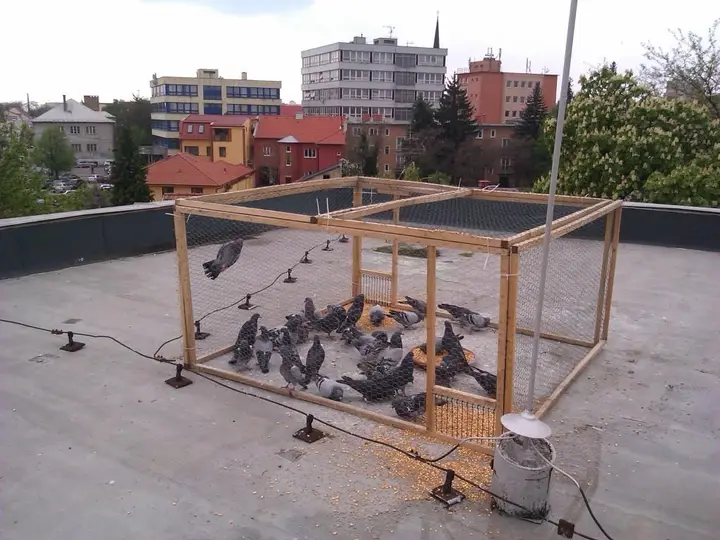
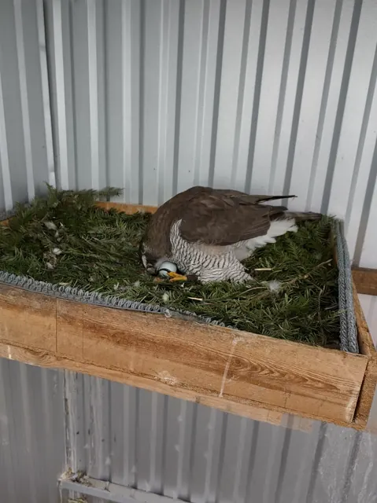

OZ Divé krídla · Biologická ochrana
Prirodzená ochrana pred premnoženými vtákmi
Odchyt mestských holubov, vypúšťanie sokolov do mesta a ochrana sadov a viníc pomocou dravých vtákov. Služby poskytujeme po dohode – cena dohodou.
0907 419 111
Mestské holuby – Váš problém, naša starosť.
Naše hlavné služby
-
 Odchyt holubov
Živolovné pasce na vytipovaných strechách a odchyt na povalách, v kostolných vežiach a podkroviach.Cena dohodou
Odchyt holubov
Živolovné pasce na vytipovaných strechách a odchyt na povalách, v kostolných vežiach a podkroviach.Cena dohodou
-
 Vypúšťanie sokolov
Sokoly rároh a sťahovavý ako prirodzený predátor holubov v meste – metodika vypúšťania metódou voľného letu.Cena dohodou
Vypúšťanie sokolov
Sokoly rároh a sťahovavý ako prirodzený predátor holubov v meste – metodika vypúšťania metódou voľného letu.Cena dohodou
-

Biologická ochrana Plašenie škorcov a iných vtákov v sadoch, viniciach a poliach pomocou sokoliarsky vycvičených dravcov.Cena dohodou


Na stránke nájdete
Odchov, sokoliarstvo, rehabilitácia a vzdelávanie
-

SOKOL – edukácia odchovu dravých vtákov Odchov dravých vtákov od vajca po vypustenie – fotografie a videá z projektu SOKOL. Zistiť viac -

Všeobecné sokoliarstvo Sokol rároh a sťahovavý, ohrozenia dravcov a druhy spôsobujúce škody. Zistiť viac -

Rehabilitácia vtákov Starostlivosť o handicapované živočíchy a nález poraneného dravca. Zistiť viac -

Anatómia a správanie dravcov Perie, zmysly, trávenie a vtlačenie – ako je dravec stavaný a ako vníma svet. Zistiť viac -

Zdravie a choroby dravcov Príznaky chorôb, prvá pomoc, sokoliarska lekárnička a prevencia. Zistiť viac -

Niečo o nás Občianske združenie OZ Divé krídla, jeho ciele a kontakt. Zistiť viac -
 Fotogaléria
Všetky fotografie a videá rozdelené podľa tém.
Zistiť viac
Fotogaléria
Všetky fotografie a videá rozdelené podľa tém.
Zistiť viac
-
 Priame kontaktovanie
Telefón, e-mail a formulár. Informácie a dokumenty na vyžiadanie.
Zistiť viac
Priame kontaktovanie
Telefón, e-mail a formulár. Informácie a dokumenty na vyžiadanie.
Zistiť viac


Dravec a jeho korisť. Na tomto prírodnom zákone stojí naša práca v mestách, sadoch aj viniciach.
- 70 %strát na kôstkovinách a viniči až spôsobí naďobnutie spevavcami
- 90 %strát nastáva pri zosadnutí veľkých kŕdľov škorcov
- 15 %únosná úroveň škôd po nasadení dravých vtákov
- 14 druhovvtákov atakovalo čerešňové sady v našej praxi
Fotogaléria
Z našej práce
Fotografie sú rozdelené podľa tém – od odchytu holubov cez vypúšťanie sokolov až po odchov mláďat.
-

9 fotografií Odchyt holubovŽivolovné pasce na strechách budov a odchyt mestských holubov. -
 15 fotografií
Povaly a vežePovaly, zvonice a podkrovia obsadené holubmi – stav pred vyčistením.
15 fotografií
Povaly a vežePovaly, zvonice a podkrovia obsadené holubmi – stav pred vyčistením.
-
18 fotografií
Vypúšťanie sokolovVypúšťacie zariadenie na streche, mladé sokoly a ich vypustenie.
-
 27 fotografií
Voľný let – fotopasceMladé sokoly vo vypúšťacom zariadení a na okolitých strechách.
27 fotografií
Voľný let – fotopasceMladé sokoly vo vypúšťacom zariadení a na okolitých strechách.
-
 28 fotografií
Biologická ochrana sadov a políSokoliarsky vycvičené dravce pri ochrane čučoriedkových polí a ovocných sadov.
28 fotografií
Biologická ochrana sadov a políSokoliarsky vycvičené dravce pri ochrane čučoriedkových polí a ovocných sadov.
- 14 fotografií Sokoliarstvo a výcvikSokoly na rukavici, výstroj, ubikácie a každodenná starostlivosť o dravce.
-

15 fotografií Chovné páry a voliéryHniezdne voliéry sokolov a jastrabov, hniezda a chovné páry. -
 11 fotografií
Rozmnožovanie a inkubáciaPráca s mikroskopom, znáška, inkubátor a kontrola vajec.
11 fotografií
Rozmnožovanie a inkubáciaPráca s mikroskopom, znáška, inkubátor a kontrola vajec.


Navrhneme riešenie priamo pre vašu lokalitu
Služby poskytujeme po dohode – cena dohodou.